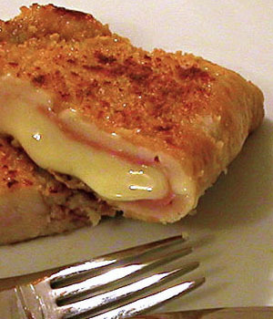

Welcome to Recetas de comida rapida
Pizzas, hamburguesas, perritos... Las mejores 71 recetas de comida rápida de Directo al Paladar
2021.12.16 15:47Webedia Directo al Paladar Menú Nuevo Buscar Pinterest Facebook Flipboard Instagram Youtube POSTRES MENÚ SEMANAL SELECCIÓN
Partners
Cocina con Maggi Mar de Noruega Triunfa Con Buitoni Saborea mangos TROPS Barilla Sabor de Italia 🎄 Las 215 mejores recetas de Navidad y 16 menúsPizzas, hamburguesas, perritos Las mejores 71 recetas de comida rápida de Directo al Paladar
Sin comentarios HOY SE HABLA DE Restaurante Michelin España El Corte Inglés Madrid Arroz Ofrecido por Saborea Mangos TROPSPasión por el mango: guía para acertar en la compra, cortarlo con facilidad y opciones de consumo
Ofrecido por BarillaLasaña de carne, de pescado o de verduras, tres rellenos que funcionan muy bien
Ofrecido por MaggiEnsalada mimosa en vasitos individuales o cómo dar un toque elegante a una comida de picoteo
Ofrecido por Coca-ColaBoletus, níscalos, trompetillas… Tres recetas para iniciarse en el arte de disfrutar de un producto
Ofrecido por Hazte vaquero“Hazte Vaquero”: así es la campaña que pone en valor la calidad de la carne de vaca europea
Ofrecido por Triunfa con BuitoniEn busca de la gyoza perfecta, cómo darles forma y cocinarlas
Ofrecido por DOP Jamón de TeruelGuía rápida para elegir un buen jamón curado y acertar
Ofrecido por La vaca que ríeCoulant de quesito light con frutos rojos, la sublime mezcla de dulce y salado
Compartir Pizzas, hamburguesas, perritos Las mejores 71 recetas de comida rápida de Directo al Paladar
Facebook Twitter Flipboard Email Síguenos Twitter Facebook Youtube Instagram Pinterest Flipboard Carmen Tía Alia @tiaalia ¡Gracias! 14 votosLa comida rápida es una alternativa que gusta siempre a los más pequeños de la casa (y también a los que no son tan pequeños). Es variada, se puede comer (en la mayoría de casos) con las manos y resulta muy sabrosa. Tres buenas razones para caer en sus redes ¿no crees?.
Pocos hay que se resistan a ella. Nosotros, desde luego, no. Y queda bien claro al comprobar la cantidad de recetas que hemos publicado a lo largo de los años. Hoy hacemos repaso de las mejores 71 recetas de comida rápida de Directo al Paladar , para que puedas replicar en casa tus favoritas.
Nuestras recetas de comida rápida las puede preparar cualquiera , desde el principiante hasta el cocinillas más experto. En poco tiempo tendrás lista la mayoría de ellas. Las encontrarás agrupadas por zona de origen para que resulte más sencillo localizar tus favoritas. Si hay alguna que echas en falta, déjanos un comentario para que nos pongamos manos a la obra y la podamos sumar a nuestro repertorio.
Italiana
Pizza casera
Junto con la hamburguesa, esta es (posiblemente) la comida rápida más popular . La masa se puede preparar con distintas fórmulas: desde la de dos ingredientes , pasando por la infalible y terminando por la que te hará quedar como un profesional .
Ingredientes
Para 3 unidades Harina de fuerza 415 g Sal 8 g Agua templada (18ºC) 270 g Levadura seca de panadería 14 g Azúcar 5 g Aceite de oliva virgen extra 25 g Semolina para espolvorearCómo hacer masa de pizza casera
Dificultad: Fácil Tiempo total 50 m Elaboración 40 m Cocción 10 m Reposo 3 hMezclamos, por un lado, la harina con la sal y, por otro, la levadura y azúcar con el agua templada. Después de unos minutos, cuando la levadura empiece a hacer burbujas, incorporamos su mezcla a la de la harina y la sal. Removemos hasta obtener una masa lisa .
Añadimos el aceite y mezclamos hasta incorporar. Pasamos la masa a una mesa enharinada y amasamos durante cinco minutos . Durante el proceso espolvoreamos de vez en cuando la mesa con un poco de harina o semolina, para que no se pegue mucho, pero siempre en pequeñas cantidades.
Formamos una bola con la masa, nos untamos las manos con aceite y dejamos que fermente unas tres horas a temperatura ambiente en un recipiente tapado con un paño. Entonces la pasamos una mesa enharinada y la aplastamos con los puños para eliminar el exceso de gas.
Dividimos en tres bolas y las dejamos reposar 10 minutos, con ello se relaja la masa y se estira más fácilmente. Ahora solo queda estirar , cubrir con los ingredientes elegidos y hornear a la máxima temperatura que permita el horno hasta que esté crujiente y dorada.
¡Gracias! 14 votosReceta completa | Receta de masa de pizza casera: la versión más fácil y efectiva
Más recetas de pizza
Pizza de bonito y anchoas Pizza cinco quesos Pizza napolitana Pizza a la carbonara Pizza a la barbacoa Pizza de pollo con salsa BBQ y champiñones Pizza de verduras Pizza blanca Pizza caprichosa Pizza de bonito y anchoas Pizza cuatro estaciones Pizza verde de pesto y verduras En Directo al Paladar 31 recetas de pizza: una pizza para cada día del mesUK, Alemania y resto de Europa
Fish & chips
Este plato de pescado rebozado y frito con sus patatas fritas de guarnición es tremendamente popular en el Reino Unido y entre los puestos callejeros y los pequeños establecimientos especializados en él, se encuentra en cada esquina. Si no lo puedes probar in situ, aquí tienes la receta.
Ingredientes para dos personas: 4 patatas, 2 filetes de pescado blanco sin piel (bacalao, merluza o similar), 200 g de harina de trigo, 3 crdtas de levadura química, 250 ml de cerveza fría, sal, pimienta negra molida y aceite vegetal para freír.
Elaboración: precalentamos el horno a 180 ºC con calor arriba y abajo. Pelamos las patatas y las cortamos en bastones gruesos. Cocemos en una cacerola con abundante agua salada durante cinco minutos. Escurrimos y las colocamos sobre papel absorbente para que se sequen bien. Mientras tanto preparamos el pescado. Secamos los filetes de bacalao con papel absorbente y los salpimentamos por las dos caras. Tenemos que conseguir retirar el exceso de humedad del pescado, para que quede carnoso. Mezclamos la harina y la levadura en un recipiente hondo y amplio. Añadimos la cerveza y removemos con unas varillas hasta que no queden grumos. Espolvoreamos cada filete de pescado con harina, por todos lados, y los sumergimos en la mezcla anterior, sujetando por la cola. Escurrimos el exceso de masa y los introducimos en una sartén con abundante aceite caliente. La temperatura ideal es 190 ºC. Freímos durante dos minutos por cada lado o hasta que el rebozado esté dorado. Trasladamos a un plato con papel absorbente para retirar el exceso de aceite. Mantenemos el pescado caliente dentro del horno mientras freímos las patatas, en el mismo aceite y sartén que hemos usado para el pescado. Cuando las patatas estén doradas, las escurrimos, salamos y servimos inmediatamente junto con los filetes de bacalao rebozados.
Receta completa | Fish and chips
Más recetas de comida rápida europea
Shawarma de pollo Baked potatoes o patatas asadas Huevos a la escocesa Currywurst alemán Pretzel alemán o lazos de pan salados Frikadellen alemán Tzatziki griego Spanakopita o empanadas de espinacas y queso feta Dolmades de arroz Tyropsomo o espirales de queso griegas Shawarma de polloMexicana
Nachos auténticos
Los Nachos de los locales de comida rápida llevan capas y capas de totopos de maíz, con todo tipo de salsas picantes, carne picada y queso fundido, Sin embargo los verdaderos Nachos solo tienen tres ingredientes: totopos, queso y jalapeños. Puedes ver cómo los prepara nuestro compañero Miguel Ayuso en el vídeo anterior o leer la receta más abajo.
Ingredientes para una ración: totopos de maíz caseros , queso cheddar rallado y chile jalapeño encurtido.
Elaboración: Disponemos los totopos caseros en una bandeja para el horno, sin superponerlos. Cubrimos toda la superficie con una fina capa de queso rallado y colocamos encima de cada totopo una rodaja de jalapeño encurtido. Para que los Nachos tengan más sabor echamos un par de cucharadas del líquido del encurtido por encima de los totopos. Horneamos a 200º C hasta que el queso se funda por completo y la punta de los totopos estén doradas. Servimos inmediatamente.
Receta completa | Así se hacen los auténticos Nachos con queso
Más recetas de comida rápida mexicana
Quesadillas de calabacín y maíz Nachos con pollo y tocino Nachos con calabacín, jalapeño y feta Tacos de atún Tacos al pastor Tacos mexicanos de ternera Quesadillas de calabacín y maíz Quesadillas de frijoles refritos y queso Burritos vegetarianos Guacamole Totopos o nachos caseros Chilaquiles rojos de huevo con chorizo Fajitas de pollo con verduras Enchiladas de atún En Directo al Paladar Siete recetas de quesadillas para cuando solo tienes 30 minutos (o menos) para hacer la cenaNorteamericana
Smash burger
Smash significa, literalmente, "aplastar", y es una técnica muy popular en EEUU para hacer hamburguesas que consiste en formar los discos de carne picada aplastando ésta directamente en la plancha. Es un hito de la comida rápida estadounidense que se puede hacer perfectamente en casa, en cualquier sartén, partiendo directamente de la carne picada, con buenísimos resultados.
Ingredientes para una ración: 120 g de carne picada, 1 lonchas de queso Cheddar, 2 lonchas de pepinillo, cebolla morada, lechuga, mayonesa, pan de hamburguesa, sal y pimienta negra molida.
Elaboración: divide los 120 g de carne picada en dos bolas de 60 g, que deberás formar suavemente con la mano, sin comprimir la carne. Salpiméntalas de forma generosa. Ahora prepara la guarnición: cebolla cortada en juliana, pepinillos en rodajas, lechuga bien cortada, mayonesa y el queso cheddar o americano. Pon una sartén grande y plana a fuego fuerte, echa una poco de mantequilla, y tuesta los panes de hamburguesa, hasta que estén dorados. Dispón en un plato, unta con mayonesa y, en un lado, coloca la lechuga, la cebolla y el pepinillo. En la misma sartén, coloca la primera bola de carne picada y aplástala enérgicamente con ayuda de una espátula. Debes presionar con fuerza, para que la hamburguesa se cocine muy rápidamente. Dale la vuelta cuando los bordes empiecen a estar crujientes (si el fuego está lo suficientemente fuerte no llevará mucho más de un minuto). Pon una loncha de queso. Cuando se funda retira la primera hamburguesa y ponla sobre la verdura. Repite la operación con la siguiente hamburguesa. Tapa el sándwich y sirve inmediatamente.
Receta completa | Smash burger: así se hace la receta de hamburguesa con queso preferida de EEUU
Más recetas de comida rápida norteamericana
Nuggets de pollo BBQ ribs New York North Carolina ribs Aros de cebolla Nuggets de pollo Perritos calientes en cerveza Hamburguesa clásica de ternera, queso y beicon Hamburguesa de pollo a la ranchera Hamburguesa vegetariana de calabacín y garbanzos Hamburguesa de bonito del norte Pollo frito al estilo sureño Alitas de pollo al estilo Búfalo Sándwich club Sándwich BLT Bagel con salmón y tres quesos al eneldo En Directo al Paladar Nuestras mejores 25 recetas de hamburguesasSudamericana
Bocadillo cubano
Muchos tenemos grabadas en la memoria las imágenes de "Chef", la película que popularizó el bocadillo cubano. Perfecto para amantes de las carnes, es muy fácil de preparar y apenas lleva tiempo, listo en menos de 15 minutos. Hemos seguido al pie de la letra la receta del libro Cuba Gastronomía, así que nos atrevemos a afirmar que así se hace el auténtico sándwich cubano.
Ingredientes para dos unidades: 10 g de mostaza de Dijon, 2 panes individuales de chapata, 4 lonchas de jamón cocido, 6 lonchas de lomo de cerdo asado, 4 lonchas de queso suizo, 3 pepinillos grandes y 10 g de mantequilla temperatura ambiente.
Elaboración: cortamos los panes por la mitad, longitudinalmente, y untamos el interior de la tapa con mostaza. En las otras mitades del pan vamos colocando los ingredientes: el jamón, el salami, el lomo, el queso y el pepinillo (previamente loncheado). Es importante respetar el orden de los ingredientes. Cerramos los bocadillos con las tapas y pincelamos la superficie de cada uno con mantequilla. Si la fundimos unos segundos en el microondas será más fácil la tarea. Colocamos los bocadillos en una plancha, grill o sandwichera, cerramos y dejamos que se tueste el pan unos minutos. Si tenemos una plancha con calor regulable, lo ponemos a temperatura suave para que el queso se funda lentamente. Una vez listos, cortamos los sándwiches cubanos por la mitad y servimos inmediatamente.
Receta completa | Para chuparse los dedos: así se hace el auténtico sándwich cubano (receta con vídeo incluido)
Suscríbete para recibir cada día nuestras recetas, información sobre nutrición y actualidad sobre gastronomía.
Más recetas de comida rápida sudamericana
Arepas reina pepiada Empanadas argentinas Arepas reina pepiada Tequeños Tarta de humita Chips de plátano macho Yuca fritaAsia
Yakitori de pollo
El significado literal de "yakitori" es pollo a la parrilla . Aunque detrás de la sencillez del término se esconden las brochetas de pollo más sabrosas de la gastronomía japonesa. Al pollo se le pueden sumar verduras al gusto y, de hecho, nosotros hemos usado cebolleta. Aportan un toque de jugosidad y textura muy equilibrado.
Ingredientes para cuatro unidades: 5 contramuslos de pollo deshuesados y sin piel, 3 cebolletas, 1 puerro, 200 ml de salsa de soja, 125 ml de mirin o vino de arroz, 125 ml de sake para cocinar, 20 g de azúcar moreno, aceite de girasol y 8 brochetas.
Elaboración: cortamos el pollo en trozos de bocado. Cortamos las cebolletas, primero al centro longitudinalmente y luego en trozos de unos dos o tres centímetros. Ensartamos en brochetas, alternando trozos de pollo y cebolleta. Reservamos. Preparamos la salsa teriyaki. Cortamos el puerro en trozos grandes y los introducimos en una olla junto con el sake, el mirim, la salsa de soja y el azúcar moreno. Cocemos a fuego suave hasta que la salsa espese y se reduzca a la mitad. Calentamos una plancha o grill antiadherente y pincelamos con un poco de aceite de girasol. Marcamos las brochetas por todos lados al tiempo que pincelamos con la salsa. Volteamos para que se cuezan por todos lados. Servimos calientes, pincelando cada brocheta con salsa justo antes de servir.
Receta completa | Yakitori de pollo, las brochetas japonesas más fáciles y sabrosas
Síguenos en Flipboard para descubrir nuevas recetas, actualidad sobre nutrición y gastronomía y nuestras revistas llenas de ideas y recetas para todos.
Seguir a Directo al Paladar en FlipboardMás recetas de comida rápida asiática
Banh Mi vietnamita Gyozas o empanadillas japonesas Brochetas de pollo Satay Bao buns o panecillos al vapor Banh Mi vietnamita Rollitos vietnamitas de langostinos y verduras Alitas de pollo teriyaki Bhaji de cebolla Samosas de verduras Noodles o fideos asiáticos Rollitos de primavera estilo chino En Directo al paladar | Viaje gastronómico por el mundo a través de la street food
En Directo al paladar | 13 recetas internacionales muy sabrosas y fáciles para salir del arroz blanco en cualquier momento
Directo al Paladar en Instagram
Seguir
Compartir Pizzas, hamburguesas, perritos Las mejores 71 recetas de comida rápida de Directo al Paladar
Facebook Twitter Flipboard E-mail Temas Recetario de cocina comida rápida recetas internacional street foodCompartir
Facebook Twitter Flipboard E-mail 1Si te ha gustado, puedes recibir más en tu correo
Te enviamos nuestra newsletter una vez al día, con todo lo que publicamos
Los mejores comentarios:
Ver 0 comentarios
Temas de interés Tarta tres cocholates Thermomix brownie bizcocho de yogur crema pastelera Roscón de Reyes ensalada césar pollo al horno lentejas tortilla de patatas croquetas torrijas fideuá InicioPartners
Cocina con Maggi Mar de Noruega Triunfa Con Buitoni Saborea mangos TROPS Barilla Sabor de Italia Recetas con Thermomix Recetas de Aperitivos Recetas de Ensaladas Recetas de Postres Recetas Vegetarianas Utensilios Postres fáciles y rápidos Recetas de invierno Dieta keto maridaje con cerveza beer sommelier sumiller de cervezaVer más temas
Síguenos Twitter Facebook Youtube Instagram Pinterest Flipboard Directo al Paladar TV Lo mejor Equipo editorial Contacta con nosotrosMás sitios que te gustarán
Espinof Xataka Poprosa VitónicaExplora en nuestros medios
Tecnología Móviles, tablets, aplicaciones, videojuegos, fotografía, domótica Xataka Xataka Móvil Xataka Foto Xataka Android Xataka Smart Home Xataka Windows Xataka Ciencia Applesfera Genbeta Magnet Mundo Xiaomi Videojuegos Consolas, juegos, PC, PS4, Switch, Nintendo 3DS y Xbox 3DJuegos Vida Extra IGN Millenium 3DJuegos PC 3DJuegos Guías Entretenimiento Series, cine, estrenos en cartelera, premios, rodajes, nuevas películas, televisión Sensacine Espinof Gastronomía Recetas, recetas de cocina fácil, pinchos, tapas, postres Directo al Paladar Estilo de vida Moda, belleza, estilo, salud, fitness, familia, gastronomía, decoración, famosos Vitónica Trendencias Trendencias Hombre Decoesfera Compradiccion Poprosa Latinoamérica Publicaciones de México Xataka México Directo al Paladar México Sensacine México 3DJuegos México Aviso legal Condiciones de uso Condiciones de uso de cookies Publicidad InicioReciente
Esta Navidad montamos la fiesta en casa con estas copas de cóctel y cinco combinados sencillos para disfrutar con los tuyos Receta de crema de limoncello casera, el delicioso chupito italiano para la sobremesa que disfrutarás en las reuniones familiares Monsieur Cuisine, el robot de cocina de Lidl, vuelve por Navidad: qué día y cuáles son sus características Las 107 recetas de pescado para esta Navidad Nuestros favoritos “Hazte Vaquero”: así es la campaña que quiere poner en valor la calidad y el sabor de la carne de vacuno europea Entrecot: los trucos del chef para clavar el punto exacto de la carne y que quede perfecto Así era la Navidad en casa de Simone Ortega: “Mi madre siempre miraba mucho los precios y compraba todo con mucha antelación” Receta de turrón de chocolate y arroz inflado: como el de Suchard, pero casero Cómo hacer beurre noisette o mantequilla avellana, y en qué recetas puedes utilizarla Juegos de cuchillos de auténtico chef perfectos para regalar (o regalarte) esta Navidad 101 recetas vegetarianas de Navidad (que todos los invitados querrán comer) Nuestros favoritos En busca de la gyoza perfecta, cómo darles forma y cocinarlas Consomé de Navidad: receta tradicional al estilo casero familiar Nuestros favoritos Qué es el omakase, la nueva moda gastronómica japonesa que ha enamorado a Marta Ortega y ha llegado para quedarse en Trendencias Cómo cocer nécoras vivas en casa Nuestros favoritos Risalamande: el postre tradicional danés más típico de Navidad Lasaña de carne, de pescado o de verduras, tres rellenos que funcionan muy bien Quimbaya: así es el nuevo estrella Michelin de Madrid, y primer restaurante colombiano estrellado de Europa Lera: así es el eterno aspirante rural a estrella Michelin que la guía reconoce (por fin) en un momento difícil para la familia Estos son los 27 nuevos restaurantes con estrella de la Guía Michelin 2022: cómo son, dónde están, cuánto cuestanVer más artículos
Directo al Paladar TV
Trenza de HOJALDRE DE FOIE Y MANZANA, una espectacular receta para ocasiones especiales Cómo CORTAR UN JAMÓN EN CASA como un profesional: así se empieza, así se termina, así se guarda Cocinamos un TIRADITO DE AJÍ AMARILLO con el chef peruano VIRGILIO MARTÍNEZVer más vídeos
Síguenos Twitter Facebook Youtube Instagram Pinterest FlipboardEn Directo al Paladar hablamos de
Recetas con Thermomix Recetas de Aperitivos Recetas de Ensaladas Recetas de Postres Recetas Vegetarianas Utensilios Postres fáciles y rápidos Recetas de invierno Dieta keto maridaje con cerveza beer sommelier sumiller de cervezaVer más temas
SubirWebedia
Tecnología
Xataka Xataka Móvil Xataka Foto Xataka Android Xataka Smart Home Xataka Windows Xataka Ciencia Applesfera Genbeta Magnet Mundo XiaomiVideojuegos
3DJuegos Vida Extra IGN Millenium 3DJuegos PC 3DJuegos GuíasEntretenimiento
Sensacine EspinofGastronomía
Directo al PaladarEstilo de vida
Vitónica Trendencias Trendencias Hombre Decoesfera Compradiccion PoprosaLatinoamérica
Xataka México 3DJuegos México Sensacine México Directo al Paladar México Webedia Xataka Vida Extra Espinof Genbeta Directo al Paladar Xataka Ciencia Trendencias Applesfera Xataka Móvil Decoesfera Vitónica Xataka Foto Trendencias Hombre Xataka Android Xataka Smart Home Xataka Windows Magnet Compradiccion 3DJuegos Sensacine IGN Millenium Poprosa Mundo Xiaomi 3DJuegos PC 3DJuegos GuíasTecnología
Xataka Xataka Móvil Xataka Foto Xataka Android Xataka Smart Home Xataka Windows Xataka Ciencia Applesfera Genbeta Magnet Mundo XiaomiVideojuegos
3DJuegos Vida Extra IGN Millenium 3DJuegos PC 3DJuegos GuíasEntretenimiento
Sensacine EspinofGastronomía
Directo al PaladarEstilo de vida
Vitónica Trendencias Trendencias Hombre Decoesfera Compradiccion Poprosa